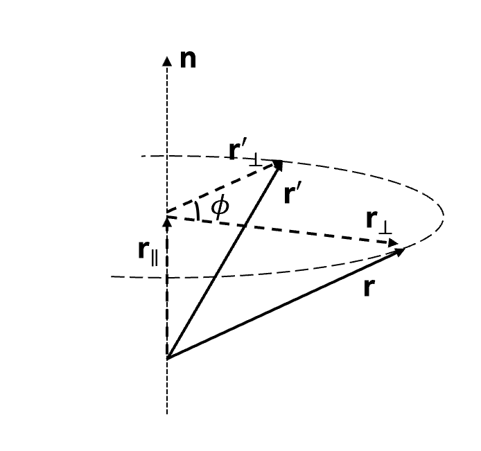

Wigner 转动的一般情况
目录
Wigner 转动指出，对坐标系按序作用两个任意方向的 Lorentz boost，其等效于一个 Lorentz boost 和一个空间转动。
即
$$ \hat{Q}\left(\boldsymbol{\beta}_{2}\right) \hat{Q}\left(\boldsymbol{\beta}_{1}\right) = \hat{Q}\left(\boldsymbol{\beta} \right) \hat{R} \tag{1} $$本文将尝试讨论一般情况下的 Wigner 转动。
相对论变换矢量关系式 #
我们首先尝试导出任意 Lorentz boost 矢量形式的变换矩阵。以 \(\boldsymbol{\beta}\) 表征 Lorentz boost ，对于在 \(S\) 中坐标为 \(( \boldsymbol{x},\ x^{0} = ct)\) 的事件，其空间坐标 \(\boldsymbol{x}\) 的平行与垂直 Lorentz boost 方向的分量可由下式给出
$$ \begin{align} \boldsymbol{x} & = x_{\parallel } \boldsymbol{e_{\parallel}} + x_{\bot} \boldsymbol{e_{\bot}} \notag \\ & = \boldsymbol{x} \cdot \frac{\boldsymbol{\beta}}{\beta} \frac{\boldsymbol{\beta}}{\beta} + \left( \boldsymbol{x} - \boldsymbol{x} \cdot \frac{\boldsymbol{\beta}}{\beta} \frac{\boldsymbol{\beta}}{\beta} \right) \tag{2} \end{align} $$利用 Lorentz 坐标变换公式，得
$$ \begin{align} \boldsymbol{x'} & = \gamma \left( \boldsymbol{x} \cdot \frac{\boldsymbol{\beta}}{\beta} - \beta x^0 \right) \frac{\boldsymbol{\beta}}{\beta} + \left( \boldsymbol{x} - \boldsymbol{x} \cdot \frac{\boldsymbol{\beta}}{\beta} \frac{\boldsymbol{\beta}}{\beta} \right) \notag \\ & = \left[ \mathbf{I} + (\gamma - 1) \frac{\boldsymbol{\beta}}{\beta} \frac{\boldsymbol{\beta}}{\beta} \right] \cdot \boldsymbol{x} - \gamma \boldsymbol{\beta} x^0 \tag{3a} \\ x'^0 & = \gamma x^0 - \boldsymbol{\beta} \gamma \cdot \boldsymbol{x} \tag{3b} \end{align} $$可写作矩阵形式
$$ \begin{bmatrix} \boldsymbol{x'} \\ x'^0 \end{bmatrix} = \begin{bmatrix} \mathbf{I} + (\gamma - 1) \frac{\boldsymbol{\beta}}{\beta} \frac{\boldsymbol{\beta}}{\beta} & -\boldsymbol{\beta} \gamma \\ -\boldsymbol{\beta} \gamma & \gamma \end{bmatrix} \begin{bmatrix} \boldsymbol{x} \\ x^0 \end{bmatrix} \tag{4} $$令 \(\gamma = \ch \theta\)，则 \(\beta \gamma = \sh \theta\)
再令 \(\frac{\boldsymbol{\beta}}{\beta} = \boldsymbol{e}\) 为该 Lorentz boost 方向的单位向量，故
$$ \hat{Q}(\boldsymbol{\beta}) = \begin{bmatrix} \mathbf{I} + (\ch \theta - 1) \boldsymbol{e} \boldsymbol{e} & -\sh \theta \boldsymbol{e} \\ -\sh \theta \boldsymbol{e} & \ch \theta \end{bmatrix} \tag{5} $$确定等效 Lorentz boost \(\boldsymbol{\beta}\) #
对于按序作用两个任意方向的 Lorentz boost，记
$$ \begin{align} & \hat{Q}\left(\boldsymbol{\beta}_{2}\right) \hat{Q}\left(\boldsymbol{\beta}_{1}\right) \notag \\ & = \begin{bmatrix} \mathbf{I} + (\ch \theta_2 - 1) \boldsymbol{e}_2 \boldsymbol{e}_2 & -\sh \theta_2 \boldsymbol{e}_2 \\ -\sh \theta_2 \boldsymbol{e}_2 & \ch \theta_2 \end{bmatrix} \begin{bmatrix} \mathbf{I} + (\ch \theta_1 - 1) \boldsymbol{e}_1 \boldsymbol{e}_1 & -\sh \theta_1 \boldsymbol{e}_1 \\ -\sh \theta_1 \boldsymbol{e}_1 & \ch \theta_1 \end{bmatrix} \notag \\ & = \begin{bmatrix} \mathbf{A}_{11} & \boldsymbol{a}_{12} \\ \boldsymbol{a}_{21} & a_{22} \end{bmatrix} \tag{6} \end{align} $$其中
$$ \begin{align} \mathbf{A}_{11} & = \mathbf{I} + (\ch\theta_1 - 1)\boldsymbol{e}_1\boldsymbol{e}_1 + (\ch\theta_2 - 1)\boldsymbol{e}_2\boldsymbol{e}_2 + \left[(\ch\theta_1 - 1)(\ch\theta_2 - 1)\boldsymbol{e}_1 \cdot \boldsymbol{e}_2 + \sh\theta_1\sh\theta_2 \right]\boldsymbol{e}_2 \boldsymbol{e}_1 \notag \quad \text{(7a)} \\ \boldsymbol{a}_{12} & = -\sh\theta_1\boldsymbol{e}_1 - \left[\sh\theta_1(\ch\theta_2 - 1)\boldsymbol{e}_1\cdot \boldsymbol{e}_2 + \sh\theta_2\ch\theta_1\right]\boldsymbol{e}_2 \tag{7b} \\ \boldsymbol{a}_{21} & = -\sh\theta_2\boldsymbol{e}_2 - \left[\sh\theta_2(\ch\theta_1 - 1)\boldsymbol{e}_1\cdot \boldsymbol{e}_2 + \ch\theta_2\sh\theta_1\right]\boldsymbol{e}_1 \tag{7c} \\ a_{22} & = \sh\theta_1\sh\theta_2\boldsymbol{e}_1\cdot \boldsymbol{e}_2 + \ch\theta_1\ch\theta_2 \tag{7d} \end{align} $$不妨首先看看要证明的式子
$$ \hat{Q}\left(\boldsymbol{\beta}_{2}\right) \hat{Q}\left(\boldsymbol{\beta}_{1}\right) = \hat{Q}\left(\boldsymbol{\beta} \right) \hat{R} \tag{8} $$对左式
$$ \hat{Q}\left(\boldsymbol{\beta}_{2}\right) \hat{Q}\left(\boldsymbol{\beta}_{1}\right) = \begin{bmatrix} \mathbf{A}_{11} & \boldsymbol{a}_{12} \\ \boldsymbol{a}_{21} & a_{22} \end{bmatrix} \tag{9} $$对右式
$$ \begin{align} \hat{Q}\left(\boldsymbol{\beta} \right) \hat{R} & = \begin{bmatrix} \mathbf{I} + (\ch\theta - 1)\boldsymbol{e}\boldsymbol{e} & -\sh\theta\boldsymbol{e} \\ -\sh\theta\boldsymbol{e} & \ch\theta \end{bmatrix} \begin{bmatrix} \mathbf{R}_{11} & 0 \\ 0 & 1 \end{bmatrix} \notag \\ & = \begin{bmatrix} (\mathbf{I} + (\ch\theta - 1)\boldsymbol{e}\boldsymbol{e})\cdot \mathbf{R}_{11} & -\sh\theta\boldsymbol{e} \\ -\sh\theta\boldsymbol{e}\cdot \mathbf{R}_{11} & \ch\theta \end{bmatrix} \tag{10} \end{align} $$需要注意的是，此处（包括下文）中的 \(\boldsymbol{e} \cdot \mathbf{R}_{11}\) 指的是 \(e_i R_{ij}\) ，即为 \(\boldsymbol{e}^T \mathbf{R}_{11}\) 。
且其中 \(\mathbf{R}_{11}\) 为一转动矩阵。
因此，要验证左右两式相等，可遵循如下思路
验证 \(a_{22}^2 - |\boldsymbol{a}_{12}|^2 = 1\)。这是为了能够表示出 \(\boldsymbol{\beta}\)
假设 \(\boldsymbol{\beta}\)
利用假设的 \(\boldsymbol{\beta}\) ，计算 \(\hat{R} = \hat{Q}^{-1}(\boldsymbol{\beta})\hat{Q}(\boldsymbol{\beta_2})\hat{Q}(\boldsymbol{\beta_1})\)
验证 \(\hat{R}\) 为空间转动，进而假设成立。
可验证
$$ \begin{cases} a_{22}^2 - |\boldsymbol{a}_{12}|^2 = 1 \\ a_{22}^2 - |\boldsymbol{a}_{21}|^2 = 1 \tag{11} \end{cases} $$因此，令
$$ \begin{align} \ch\theta &= a_{22} = \sh\theta_1\sh\theta_2\boldsymbol{e}_1\cdot\boldsymbol{e}_2 + \ch\theta_1\ch\theta_2 \tag{12a} \\ \sh\theta &= |\boldsymbol{a}_{12}| = |\boldsymbol{a}_{21}| \tag{12b} \end{align} $$对于 \(\boldsymbol{\beta}\) 的方向 \(\boldsymbol{e}\)，先假设
$$ -\sh\theta\ \ \boldsymbol{e} = \boldsymbol{a}_{12} \tag{13} $$成立。即
$$ \boldsymbol{e} = \frac{\sh\theta_1\boldsymbol{e}_1 + \left[\sh\theta_1(\ch\theta_2 - 1)\boldsymbol{e}_1\cdot \boldsymbol{e}_2 + \sh\theta_2\ch\theta_1\right]\boldsymbol{e}_2}{\sqrt{\sh^2\theta_1 \sh^2\theta_2(\boldsymbol{e}_1\cdot \boldsymbol{e}_2)^2 + \ch^2\theta_1\ch^2\theta_2 + 2\sh\theta_1\sh\theta_2\ch\theta_1\ch\theta_2(\boldsymbol{e}_1\cdot \boldsymbol{e}_2) - 1}} \quad \text{(14)} $$因此
$$ \hat{Q}(\boldsymbol{\beta}) = \begin{bmatrix} \mathbf{I} + (\ch\theta - 1)\boldsymbol{e}\boldsymbol{e} & -\sh\theta\boldsymbol{e} \\ -\sh\theta\boldsymbol{e} & \ch\theta \end{bmatrix} \tag{15} $$验证空间转动 \(\hat{R}\) #
$$ \begin{align} \hat{R} & = \hat{Q}^{-1}(\boldsymbol{\beta})\hat{Q}(\boldsymbol{\beta_2})\hat{Q}(\boldsymbol{\beta_1}) \notag \\ & = \hat{Q}(-\boldsymbol{\beta})\hat{Q}(\boldsymbol{\beta_2})\hat{Q}(\boldsymbol{\beta_1}) \notag \\ & = \begin{bmatrix} 1 + (\ch\theta - 1)\boldsymbol{e}\boldsymbol{e} & \sh\theta\boldsymbol{e} \\ \sh\theta\boldsymbol{e} & \ch\theta \end{bmatrix} \begin{bmatrix} \mathbf{A}_{11} & \boldsymbol{a}_{12} \\ \boldsymbol{a}_{21} & a_{22} \end{bmatrix} \notag \\ & = \begin{bmatrix} \mathbf{R}_{11} & \boldsymbol{r}_{12} \\ \boldsymbol{r}_{21} & r_{22} \end{bmatrix} \tag{16} \end{align} $$其中
$$ \begin{align} r_{22} & = \sh\theta\boldsymbol{e}\cdot\boldsymbol{a}_{12} + \ch\theta \ a_{22} \notag \\ & = \sh\theta\boldsymbol{e} \cdot (-\sh\theta\boldsymbol{e}) + \ch^2\theta \notag \\ & = -\sh^2\theta|\boldsymbol{e}|^2 + \ch^2\theta = 1 \tag{17a} \\ \boldsymbol{r}_{12} & = \left[ \mathbf{I} + (\ch\theta - 1)\boldsymbol{e}\boldsymbol{e} \right] \cdot \boldsymbol{a}_{12} + \sh\theta \boldsymbol{e}\ a_{22} \notag \\ & = \left[ \mathbf{I} + (\ch\theta - 1)\boldsymbol{e}\boldsymbol{e} \right] \cdot (-\sh\theta \boldsymbol{e}) + \sh\theta \ch\theta \boldsymbol{e} \notag \\ & = \boldsymbol{0} \tag{17b} \\ \boldsymbol{r}_{21} & = \sh\theta \boldsymbol{e} \cdot \mathbf{A}_{11} + \ch\theta \boldsymbol{a}_{21} \notag \\ & = -\boldsymbol{a}_{12} \cdot \mathbf{A}_{11} + a_{22} \boldsymbol{a}_{21} \notag \\ & = \boldsymbol{0} \tag{17c} \\ \mathbf{R}_{11} & = \left[ \mathbf{I} + (\ch\theta - 1)\boldsymbol{e}\boldsymbol{e} \right] \cdot \mathbf{A}_{11} + \sh\theta \boldsymbol{e} \boldsymbol{a}_{21} \tag{17d} \\ \end{align} $$注意到结果中 \(r_{22} = 1\), \(\boldsymbol{r}_{12}=\boldsymbol{0}\)，从而确实有 \(-\sh\theta\ \ \boldsymbol{e} = \boldsymbol{a}_{12}\) 。因此上文中的假设 (13) 是成立的。
接下来，需要验证 \(\mathbf{R}_{11}\) 确为一转动矩阵。
由于
$$ \boldsymbol{r}_{21} = \sh\theta \boldsymbol{e} \cdot \mathbf{A}_{11} + \ch\theta \boldsymbol{a}_{21} = \boldsymbol{0} \tag{18} $$从而
$$ \begin{align} \mathbf{R}_{11} & = \left[ \mathbf{I} + (\ch\theta - 1)\boldsymbol{e}\boldsymbol{e} \right] \cdot \mathbf{A}_{11} + \sh\theta \boldsymbol{e} \frac{ - \sh\theta\boldsymbol{e} \cdot \mathbf{A}_{11}}{\ch\theta} \notag \\ & = \left[ \mathbf{I} - \frac{\ch\theta - 1}{\ch\theta} \boldsymbol{e}\boldsymbol{e} \right] \cdot \mathbf{A}_{11} \notag \\ & = \left[ \mathbf{I} - \frac{1}{\ch\theta (\ch\theta + 1)} \boldsymbol{a}_{12} \boldsymbol{a}_{12} \right] \cdot \mathbf{A}_{11} \notag \\ & = \mathbf{I} + b_{11} \boldsymbol{e}_1 \boldsymbol{e}_1 + b_{12} \boldsymbol{e}_1 \boldsymbol{e}_2 + b_{21} \boldsymbol{e}_2 \boldsymbol{e}_1 + b_{22} \boldsymbol{e}_2 \boldsymbol{e}_2 \tag{19} \end{align} $$现在我们已经将 \(\mathbf{R}_{11}\) 形式地表为了 (19) 式所示，即
$$ \begin{align} \mathbf{R}_{11} & = \mathbf{I} + \sum b_{ij} \boldsymbol{e}_i \boldsymbol{e}_j \notag \\ & = \mathbf{I} + \begin{bmatrix} \boldsymbol{e}_1 & \boldsymbol{e}_2 \end{bmatrix} \begin{bmatrix} b_{11} & b_{12} \\ b_{21} & b_{22} \end{bmatrix} \begin{bmatrix} \boldsymbol{e}_1 \\ \boldsymbol{e}_2 \end{bmatrix} \tag{20} \end{align} $$要验证其为转动矩阵，即是验证
$$ \mathbf{R}_{11} \mathbf{R}_{11}^T = \mathbf{I} \tag{21} $$$$ \det \mathbf{R}_{11} = 1 \tag{22} $$
对于 (21) 式，利用 (20) 式，可化简为
$$ \begin{bmatrix} b_{11} & b_{12} \\ b_{21} & b_{22} \end{bmatrix} + \begin{bmatrix} b_{11} & b_{21} \\ b_{12} & b_{22} \end{bmatrix} + \begin{bmatrix} b_{11} & b_{12} \\ b_{21} & b_{22} \end{bmatrix} \begin{bmatrix} 1 & \boldsymbol{e}_1 \cdot \boldsymbol{e}_2 \\ \boldsymbol{e}_1 \cdot \boldsymbol{e}_2 & 1 \end{bmatrix} \begin{bmatrix} b_{11} & b_{21} \\ b_{12} & b_{22} \end{bmatrix} = 0 \tag{23} $$对于 (22) 式，考虑 (20) 式右乘 \(\begin{bmatrix} \boldsymbol{e}_1 & \boldsymbol{e}_2 \end{bmatrix}\)，得到
$$ \mathbf{R}_{11} \begin{bmatrix} \boldsymbol{e}_1 & \boldsymbol{e}_2 \end{bmatrix} = \begin{bmatrix} \boldsymbol{e}_1 & \boldsymbol{e}_2 \end{bmatrix} \left( \mathbf{I} + \begin{bmatrix} b_{11} & b_{12} \\ b_{21} & b_{22} \end{bmatrix} \begin{bmatrix} 1 & \boldsymbol{e}_1 \cdot \boldsymbol{e}_2 \\ \boldsymbol{e}_1 \cdot \boldsymbol{e}_2 & 1 \end{bmatrix} \tag{24} \right) $$由于
$$ \det \begin{bmatrix} \boldsymbol{e}_1 & \boldsymbol{e}_2 \end{bmatrix} = \sqrt{1 - (\boldsymbol{e}_1 \cdot \boldsymbol{e}_2)^2} \neq 0 \tag{25} $$因此
$$ \det \mathbf{R}_{11} = \det \left( \mathbf{I} + \begin{bmatrix} b_{11} & b_{12} \\ b_{21} & b_{22} \end{bmatrix} \begin{bmatrix} 1 & \boldsymbol{e}_1 \cdot \boldsymbol{e}_2 \\ \boldsymbol{e}_1 \cdot \boldsymbol{e}_2 & 1 \end{bmatrix} \right) = 1 \tag{26} $$因此，需要验证 (23), (26) 式。
其中
$$ \begin{align} & b_{11} = b_{22} = - \frac{(\ch\theta_1 - 1)(\ch\theta_2 - 1)}{\ch\theta + 1} \tag{27a} \\ & b_{12} = -\frac{\sh\theta_1 \sh\theta_2}{\ch\theta + 1} \tag{27b} \\ & b_{21} = \frac{2(\ch\theta_1 - 1)(\ch\theta_2 - 1)(\boldsymbol{e}_1 \cdot \boldsymbol{e}_2) + \sh\theta_1 \sh\theta_2}{\ch\theta + 1} \tag{27c} \\ \end{align} $$可验证其满足关系
$$ \begin{cases} b_{11} = b_{22}\\ (b_{11}+1)(b_{22}+1) - b_{12}b_{21} = 1 \\ b_{12} + b_{21} + 2b_{22}(\boldsymbol{e}_1 \cdot \boldsymbol{e}_2) = 0 \end{cases} \tag{28} $$因此 \(\mathbf{R}_{11}\) 为一转动矩阵。
从而
$$ \hat{R}= \begin{bmatrix} \mathbf{R}_{11} & 0 \\ 0 & 1 \end{bmatrix} \tag{29} $$对应空间转动。
转动矩阵 \(\mathbf{R}_{11}\) 的矢量形式 #
我们首先尝试给出任意转动的矩阵表示，以此指导我们对转动矩阵的化简与分析。
对任意转动，以转轴方向的单位向量 \(\boldsymbol{n}\) 与转动角度 \(\phi\) 表示。
如图所示
 图 1 从而有
$$ \boldsymbol{r}' = \boldsymbol{r}_\parallel + \boldsymbol{r}'_\bot \tag{30}$$其中
$$ \boldsymbol{r}_\parallel = (\boldsymbol{r} \cdot \boldsymbol{n}) \boldsymbol{n} \tag{31} $$$$ \boldsymbol{r}'_\bot = \boldsymbol{r}_\bot \cos\phi + (\boldsymbol{n} \times \boldsymbol{r}_\bot) \sin\phi \tag{32} $$
因此
$$ \boldsymbol{r}' = (\boldsymbol{r} \cdot \boldsymbol{n}) \boldsymbol{n} + (\boldsymbol{r} - (\boldsymbol{r} \cdot \boldsymbol{n}) \boldsymbol{n}) \cos\phi + (\boldsymbol{n} \times \boldsymbol{r}) \sin\phi \tag{33} $$即
$$ r'_i = \left[ n_i n_j + (\delta_{ij} - n_i n_j) \cos\phi - \varepsilon_{ijk} n_k \sin\phi \right] r_j \tag{34} $$从而转动矩阵为
$$ R_{ij} = n_i n_j + (\delta_{ij} - n_i n_j) \cos\phi - \varepsilon_{ijk} n_k \sin\phi \tag{35} $$
首先对单位元 \(\mathbf{I}\) 进行分解。
需要注意的是，我们的目的是将 (19) 式中的单位元 \(\mathbf{I}\) 进行分解，因此全空间应为 \(\mathbb{R}^3\)，从而 \(\left( \operatorname{span}\{\boldsymbol{e}_1, \boldsymbol{e}_2\} \right)^\perp \cong \mathbb{R}^1\)。因此，取 \(\boldsymbol{e}_{\bot}\) 为该正交补空间的单位向量。
设
$$ \mathbf{I} = C_{11} \boldsymbol{e}_1\boldsymbol{e}_1 + C_{12} \boldsymbol{e}_1\boldsymbol{e}_2 + C_{21} \boldsymbol{e}_2\boldsymbol{e}_1 + C_{22} \boldsymbol{e}_2\boldsymbol{e}_2 + \boldsymbol{e}_{\bot} \boldsymbol{e}_{\bot} \tag{36} $$则
从而
$$ \begin{align} \mathbf{R}_{11} &= \left( 1 + \frac{b_{11}}{C_{11}} \right) \mathbf{I} - \frac{b_{11}}{C_{11}} \mathbf{I} + b_{11} \boldsymbol{e}_1 \boldsymbol{e}_1 + b_{12} \boldsymbol{e}_1 \boldsymbol{e}_2 + b_{21} \boldsymbol{e}_2 \boldsymbol{e}_1 + b_{22} \boldsymbol{e}_2 \boldsymbol{e}_2 \notag \\ &= \left( 1 + \frac{b_{11}}{C_{11}} \right) \mathbf{I} + \left( b_{11} - b_{11}\frac{C_{11}}{C_{11}} \right) \boldsymbol{e}_1\boldsymbol{e}_1 + \left( b_{12} - b_{11}\frac{C_{12}}{C_{11}} \right) \boldsymbol{e}_1\boldsymbol{e}_2 \notag \\ &\phantom{{}= \left( 1 + \frac{b_{11}}{C_{11}} \right) \mathbf{I}} + \left( b_{21} - b_{11}\frac{C_{21}}{C_{11}} \right) \boldsymbol{e}_2\boldsymbol{e}_1 + \left( b_{22} - b_{11}\frac{C_{22}}{C_{11}} \right) \boldsymbol{e}_2\boldsymbol{e}_2 \notag \\ &\phantom{{}= \left( 1 + \frac{b_{11}}{C_{11}} \right) \mathbf{I}} - \frac{b_{11}}{C_{11}} \boldsymbol{e}_{\bot} \boldsymbol{e}_{\bot} \notag \\ &= \boldsymbol{e}_{\bot} \boldsymbol{e}_{\bot} + \left( \mathbf{I} -\boldsymbol{e}_{\bot} \boldsymbol{e}_{\bot} \right) \left( 1 + \frac{b_{11}}{C_{11}} \right) + \left( b_{12} - b_{11}\frac{C_{12}}{C_{11}} \right) \boldsymbol{e}_1\boldsymbol{e}_2 \notag \\ &\phantom{= \boldsymbol{e}_{\bot} \boldsymbol{e}_{\bot} + \left( \mathbf{I} -\boldsymbol{e}_{\bot} \boldsymbol{e}_{\bot} \right) \left( 1 + \frac{b_{11}}{C_{11}} \right)} + \left( b_{21} - b_{11}\frac{C_{21}}{C_{11}} \right) \boldsymbol{e}_2\boldsymbol{e}_1 \notag \\ &= \boldsymbol{e}_{\bot} \boldsymbol{e}_{\bot} + \left( \mathbf{I} -\boldsymbol{e}_{\bot} \boldsymbol{e}_{\bot} \right) \left[ \alpha (\boldsymbol{e}_1 \cdot \boldsymbol{e}_2) + \beta \right] + \alpha \left[ \boldsymbol{e}_2\boldsymbol{e}_1 - \boldsymbol{e}_1\boldsymbol{e}_2 \right] \tag{39} \end{align} $$或
$$ (\mathbf{R}_{11})_{ij} = (\boldsymbol{e}_{\bot})_i (\boldsymbol{e}_{\bot})_j + \left[ \delta_{ij} - (\boldsymbol{e}_{\bot})_i (\boldsymbol{e}_{\bot})_j \right] \left[ \alpha (\boldsymbol{e}_1 \cdot \boldsymbol{e}_2) + \beta \right] - \alpha \varepsilon_{ijk} (\boldsymbol{e}_1 \times \boldsymbol{e}_2)_k \quad \text{(40)} $$其中
$$ \begin{cases} \alpha = \frac{\sh\theta_1\sh\theta_2 + (\ch\theta_1-1)(\ch\theta_2-1)(\boldsymbol{e_1} \cdot \boldsymbol{e_2})}{\ch\theta+1} \\ \beta = \frac{\ch\theta_1+\ch\theta_2}{\ch\theta+1} \end{cases} \tag{41} $$记转动的转角为 \(\phi\)，转动的方向向量为 \(\boldsymbol{n}\)，对比 (35) 式，因此
补充 #
（一）关于等效 Lorentz boost 与空间转动的次序 #
本文所考察的等效变换是
$$ \hat{Q}\left(\boldsymbol{\beta}_{2}\right) \hat{Q}\left(\boldsymbol{\beta}_{1}\right) = \hat{Q}\left(\boldsymbol{\beta} \right) \hat{R} \tag{43} $$即先进行空间转动，再进行 Lorentz boost。
实际上应有两种等效变换形式，即
$$ \hat{Q}\left(\boldsymbol{\beta}_{2}\right) \hat{Q}\left(\boldsymbol{\beta}_{1}\right) = \hat{Q}\left(\boldsymbol{\beta} \right) \hat{R} = \hat{R}' \hat{Q}\left(\boldsymbol{\beta}' \right) \tag{44} $$我们需要比较二者的区别。注意到对易 Lorentz boost 与空间转动改变了整体矩阵的副对角线元素，即
$$ \hat{Q}\left(\boldsymbol{\beta} \right) \hat{R} = \begin{bmatrix} (\mathbf{I} + (\ch\theta - 1)\boldsymbol{e}\boldsymbol{e})\cdot \mathbf{R}_{11} & -\sh\theta\boldsymbol{e} \\ -\sh\theta\boldsymbol{e}\cdot \mathbf{R}_{11} & \ch\theta \end{bmatrix} \tag{45} $$$$ \hat{R}' \hat{Q}\left(\boldsymbol{\beta}' \right) = \begin{bmatrix} \mathbf{R}'_{11} \cdot (\mathbf{I} + (\ch\theta' - 1)\boldsymbol{e}'\boldsymbol{e}') & -\sh\theta'\ \mathbf{R}'_{11} \cdot \boldsymbol{e}' \\ -\sh\theta'\ \boldsymbol{e}' & \ch\theta' \end{bmatrix} \tag{46} $$
可见 \(\boldsymbol{\beta}'\) 相较 \(\boldsymbol{\beta}\) 大小不变，但旋转了一个角度，即
$$ \begin{cases} \boldsymbol{\beta} = \mathbf{R}'_{11} \cdot \boldsymbol{\beta}'\\ \boldsymbol{\beta}' = \boldsymbol{\beta} \cdot \mathbf{R}_{11} \end{cases} \tag{47} $$或
$$ \begin{cases} \beta_i = R'_{ij} \beta'_j \\ \beta'_i = \beta_j R_{ji} \end{cases} \tag{48} $$从而
$$ \beta_i = R'_{ij} \beta_k R_{kj} \tag{49}$$有
$$ R'_{ij} R_{kj} = \delta_{ik} \tag{50}$$或
$$ \mathbf{R}'_{11} \mathbf{R}_{11}^T = \mathbf{I} \tag{51}$$得到
$$ \mathbf{R}'_{11} = \mathbf{R}_{11} \tag{52}$$综合上述讨论，针对两种等效形式，有
$$ \hat{Q}\left(\boldsymbol{\beta}_{2}\right) \hat{Q}\left(\boldsymbol{\beta}_{1}\right) = \hat{Q}\left(\boldsymbol{\beta} \right) \hat{R} = \hat{R} \hat{Q}\left( \mathbf{R}_{11}^T \cdot \boldsymbol{\beta} \right) \tag{53} $$从另一个角度看这个问题，即是
$$\hat{Q}\left( \mathbf{R}_{11}^T \cdot \boldsymbol{\beta} \right) = \hat{R}^T \hat{Q}\left(\boldsymbol{\beta} \right) \hat{R} \tag{54}$$根据 Lorentz 群的空间旋转对称性，此式显然。
（二）低阶近似 #
考虑 \(\beta_1, \beta_2 \to 0\) 时的低阶近似
此时
因此可近似 \(\sin\phi \approx \phi\)，得到转角
（三）Thomas 进动 #
Thomas 进动指出，一个沿弯曲轨道运动（即存在不平行于速度方向的加速度）的粒子，其固有坐标系相对于实验室系的取向会发生一个纯粹相对论性的进动。
在时刻 \(t\) 与 \(t+dt\) 粒子的瞬时静止系分别记为 \(S\) 与 \(S'\)。二者之间的变换可写成两个 boost 的复合
$$ S \to S' :\quad \hat{\Lambda} = \hat{Q}\!\left(\boldsymbol{\beta}+d\boldsymbol{\beta}\right)\hat{Q}\!\left(\boldsymbol{- \beta}\right) \tag{57} $$这里 \(\hat{Q}\!\left(\boldsymbol{- \beta}\right)\) 把 \(S\) 带回到实验室系，再用 \(\hat{Q}\!\left(\boldsymbol{\beta}+d\boldsymbol{\beta}\right)\) 把实验室系带到新的瞬时静止系 \(S'\)。其中
$$\boldsymbol{\beta} = \frac{\boldsymbol{v}}{c}, \quad d\boldsymbol{\beta} = \frac{\boldsymbol{a} dt}{c} \tag{58}$$利用 (42) 式，并考虑 \(d\boldsymbol{\beta} \ll \boldsymbol{\beta}\)，保留一阶项，有
$$ \boldsymbol{n} \sin d\phi \approx \frac{\gamma^2 \beta^2 - (\gamma - 1)^2}{ - \gamma^2 \beta^2 + \gamma^2 + 1} \frac{ - \boldsymbol{\beta} \times d\boldsymbol{\beta}}{\beta^2} = \frac{ 1- \gamma }{\beta^2} \boldsymbol{\beta} \times d\boldsymbol{\beta} = \frac{\gamma^2}{\gamma + 1} d\boldsymbol{\beta} \times \boldsymbol{\beta} \tag{59} $$即
$$\boldsymbol{n} d{\phi} = \frac{\gamma^2}{\gamma + 1} d\boldsymbol{\beta} \times \boldsymbol{\beta} = \frac{\gamma^2}{\gamma + 1} \frac{dt}{c^2} \boldsymbol{a} \times \boldsymbol{v} \tag{60}$$因此 Thomas 进动的角速度为
$$ \boldsymbol{\omega}_T = \frac{\gamma^2}{\gamma + 1} \frac{ \boldsymbol{a} \times \boldsymbol{v} }{c^2} \tag{61} $$若 \(v \ll c\)，则
$$ \boldsymbol{\omega}_T \approx \frac{1}{2} \frac{ \boldsymbol{a} \times \boldsymbol{v} }{c^2} \tag{62} $$带入 Bohr 氢原子轨道模型，得
$$ \omega_T = \frac{\mu_0}{8\pi} \frac{m e^8}{(4\pi \epsilon_0)^3 (n \hbar)^5} \tag{63} $$（四）代数结构 #
Wigner 转动来自于 Lorentz boost 生成元 \(\hat{\boldsymbol{K}}\) 的非零对易子。
设两次 Lorentz boost 快度分别为 \(\boldsymbol{\eta}^1, \boldsymbol{\eta}^2\)，即
$$ \boldsymbol{\eta}^1 = (\sh^{-1} \beta_{1}\gamma_1) \frac{\boldsymbol{\beta}_1}{\beta_1} \tag{64} $$$$ \boldsymbol{\eta}^2 = (\sh^{-1} \beta_{2}\gamma_2) \frac{\boldsymbol{\beta}_2}{\beta_2} \tag{65} $$故
$$ \hat{Q}(\boldsymbol{\beta}_1) = \exp\left(i \boldsymbol{\eta}^1 \cdot \hat{\boldsymbol{K}} \right) \tag{66} $$$$ \hat{Q}(\boldsymbol{\beta}_2) = \exp\left(i \boldsymbol{\eta}^2 \cdot \hat{\boldsymbol{K}}\right) \tag{67} $$
由于
$$ \hat{Q}(\boldsymbol{\beta}_2) \hat{Q}(\boldsymbol{\beta}_1) = \hat{Q}(\boldsymbol{\beta}) \hat{R} \tag{68} $$即
$$ \exp(i \boldsymbol{\eta}^2 \cdot \hat{\boldsymbol{K}}) \exp(i \boldsymbol{\eta}^1 \cdot \hat{\boldsymbol{K}}) = \exp(i \boldsymbol{\eta} \cdot \hat{\boldsymbol{K}}) \hat{R} \tag{69} $$根据对称性，有
$$ \exp(i \boldsymbol{\eta}^1 \cdot \hat{\boldsymbol{K}}) \exp(i \boldsymbol{\eta}^2 \cdot \hat{\boldsymbol{K}}) = \exp(i \boldsymbol{\eta} \cdot \hat{\boldsymbol{K}}) \hat{R}^{-1} \tag{70} $$因此
$$ \exp(i \boldsymbol{\eta}^2 \cdot \hat{\boldsymbol{K}}) \exp(i \boldsymbol{\eta}^1 \cdot \hat{\boldsymbol{K}}) = \exp(i \boldsymbol{\eta}^1 \cdot \hat{\boldsymbol{K}}) \exp(i \boldsymbol{\eta}^2 \cdot \hat{\boldsymbol{K}}) \hat{R}^2 \tag{71} $$由 Baker-Campbell-Hausdorff 公式，有
$$ \hat{R}^2 = \exp\left( \left[i \boldsymbol{\eta}^2 \cdot \hat{\boldsymbol{K}}, i \boldsymbol{\eta}^1 \cdot \hat{\boldsymbol{K}}\right] + \frac{1}{2}\left[ \left[i \boldsymbol{\eta}^2 \cdot \hat{\boldsymbol{K}}, i \boldsymbol{\eta}^1 \cdot \hat{\boldsymbol{K}} \right], i \boldsymbol{\eta}^2 \cdot \hat{\boldsymbol{K}} + i \boldsymbol{\eta}^1 \cdot \hat{\boldsymbol{K}}\right] + \cdots \right) \quad \text{(72)} $$考虑 \(\beta_1, \beta_2 \to 0\) 的低阶近似
$$ \begin{align} \hat{R}^2 & \approx \exp\left(\left[i \boldsymbol{\eta}^2 \cdot \hat{\boldsymbol{K}}, i \boldsymbol{\eta}^1 \cdot \hat{\boldsymbol{K}}\right]\right) \notag \\ & =\exp\left(\left[i {\eta}^2_i \hat{K}_i, i {\eta}^1_j \hat{K}_j \right]\right) \notag \\ & =\exp\left(- {\eta}^2_i {\eta}^1_j \left[\hat{K}_i, \hat{K}_j \right]\right) \notag \\ & = \exp\left( i {\eta}^2_i {\eta}^1_j \varepsilon_{ijk} \hat{J}_k \right) \notag \\ & = \exp\left( - i (\boldsymbol{\eta}^1 \times \boldsymbol{\eta}^2 ) \cdot \hat{\boldsymbol{J}} \right) \tag{73} \end{align} $$故
$$ \hat{R} \approx \exp\left( - \frac{i}{2} (\boldsymbol{\eta}^1 \times \boldsymbol{\eta}^2 ) \cdot \hat{\boldsymbol{J}} \right) \tag{74} $$转角
$$ \boldsymbol{n} \phi \approx \frac{1}{2} \boldsymbol{\eta}^1 \times \boldsymbol{\eta}^2 \approx \frac{1}{2} \boldsymbol{\beta}_1 \times \boldsymbol{\beta}_2 \tag{75} $$